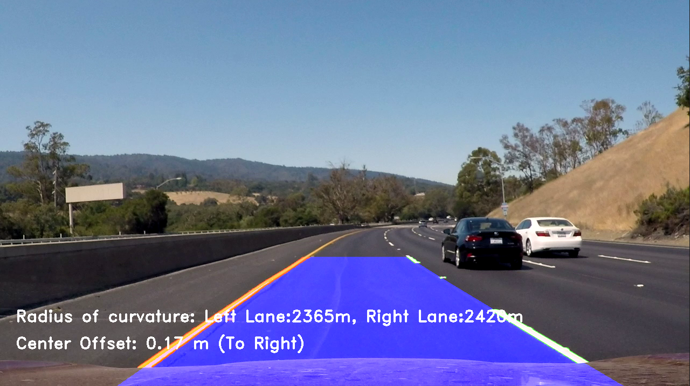

Implemented Structure from Motion algorithm to reconstruct 3D meshes from image data. The algorithm uses feature extraction and matching to identify
common features across images performs linearization and triangulates the points using epipolar geometry. The resulting 3D points are reprojected to
reconstruct the 3D object in focus.
Developed a pipeline for Visual Odometry incorporating concepts like feature extraction, Perspective-n-point, nonlinear triangulation, etc.
The algorithm implemented works with an average of 50 FPS with 84.3% odometry tracking performance. Algorithm was evaluated using KITTI monocular dataset.

In this project, an AR tag was detected in a video and an image was superimposed on it. Finally, a 3D cube was
augmented on top of it.

The lane detetcion for autonomous vehicle using image processing techniques was implemented.
The turn radius of the current lane the vehicle is traveling on, is detected and displayed. The
offset from the center of the lane is also detected to maintain the vehicle in the current lane.